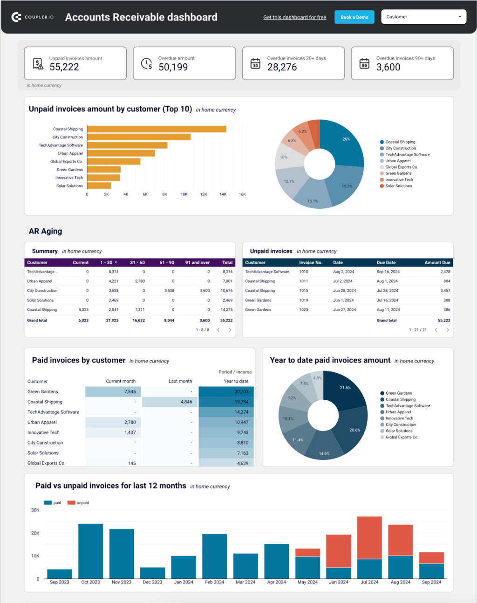

Unidad 3 Tablero de Control (Dashboard)
Cátedra: Prof. Juan Pablo Cesarini
Introducción al Análisis basado en Indicadores
En la gestión moderna, "lo que no se mide, no se puede mejorar". El análisis financiero tradicional ha evolucionado hacia un modelo dinámico donde los indicadores permiten monitorear la salud de una organización en tiempo real.
Dato
Un número aislado sin contexto.
Ejemplo: Ventas totales = $10.000.000
Indicador
Relación entre dos o más datos.
Ejemplo: (Ventas Actuales / Presupuesto) = 1,25
KPI
Métrica crítica para la estrategia.
Ejemplo: Margen Neto > 15%
El Balanced Scorecard (BSC)
Desarrollado por Kaplan y Norton, propone equilibrar los indicadores financieros con perspectivas de clientes, procesos internos y aprendizaje.
Metodología SMART para Objetivos
Para que un tablero sea efectivo, los objetivos deben estar correctamente redactados. Un objetivo mal definido conduce a un KPI inútil.
- Specific (Específico)
- Measurable (Medible)
- Achievable (Alcanzable)
- Relevant (Relevante)
- Time-bound (Plazo)
Ejemplo de redacción técnica:
Inadecuado: "Queremos ganar más
dinero este año".
Correcto (SMART): "Aumentar el
ROE en un 5% respecto al ejercicio
anterior para el 31 de diciembre de 2026".
Ratios Financieros Clave
Liquidez Corriente: Activo Corriente / Pasivo
Corriente
(Ejemplo: $5.000.000 / $3.500.000 =
1,43)
ROE (Return on Equity): Resultado Neto /
Patrimonio Neto
(Ejemplo: $1.800.000 / $4.000.000 =
45%)
Nota sobre contexto Argentino: En economías inflacionarias, los indicadores deben actualizarse según la inflación proyectada para mantener la validez de la toma de decisiones.
Planilla de Cashflow Proyectado (Contexto Inflacionario)
En economías con alta volatilidad, proyectar flujos nominales es insuficiente. El siguiente ejemplo muestra cómo un flujo de fondos positivo puede volverse crítico si los costos se indexan y los ingresos permanecen fijos (ej. contratos sin cláusula de ajuste).
| CONCEPTO / PERÍODO | MES 1 (Base) | MES 2 (+5% Inf.) | MES 3 (+5% Inf.) |
|---|---|---|---|
| (+) Cobranzas (Cuotas Fijas) | $ 2.000.000,00 | $ 2.000.000,00 | $ 2.000.000,00 |
| (-) Egresos Operativos (Indexados) | $ -1.200.000,00 | $ -1.260.000,00 | $ -1.323.000,00 |
| (-) Cargas Sociales e Impuestos | $ -400.000,00 | $ -420.000,00 | $ -441.000,00 |
| FLUJO NETO DEL PERÍODO | $ 400.000,00 | $ 320.000,00 | $ 236.000,00 |
Guía de Interpretación: Cuentas a Cobrar

Conclusión: Leer un tablero no es ver gráficos; es identificar desviaciones y decidir acciones inmediatas sobre el capital de trabajo.